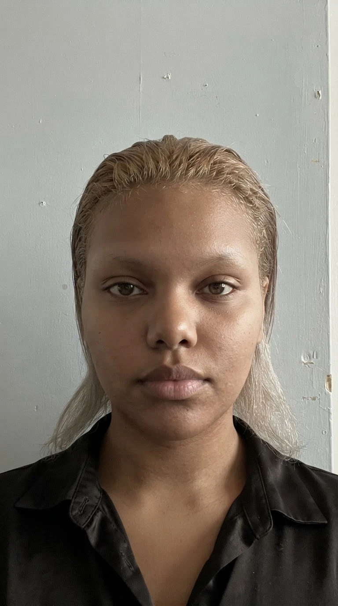
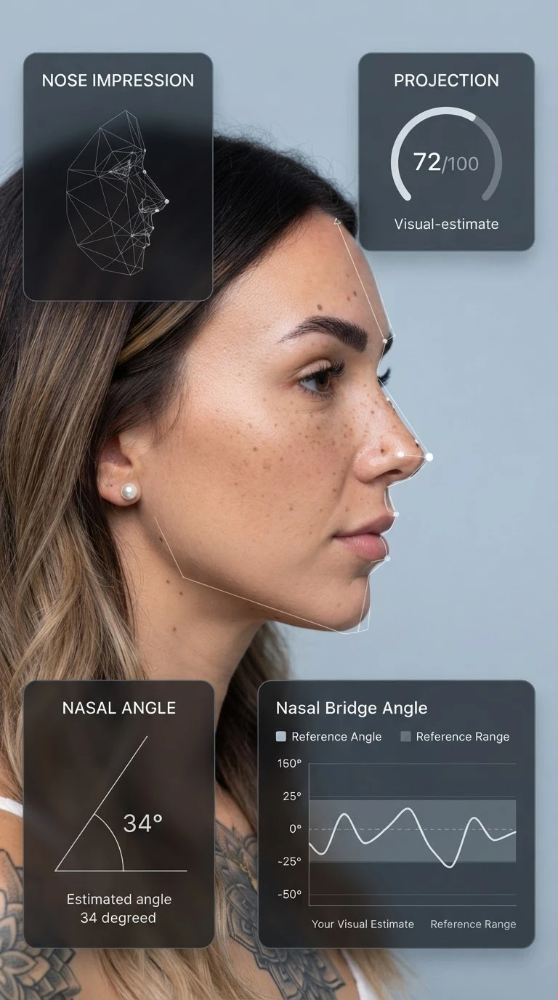
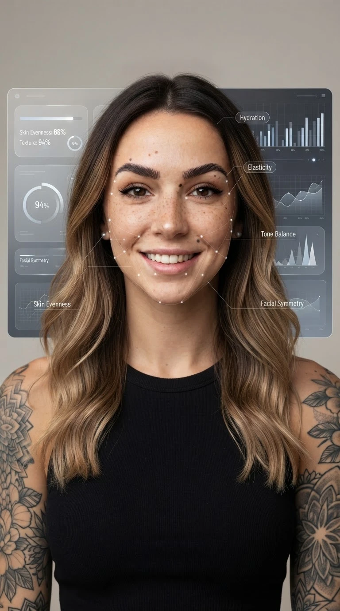

This scanner can analyze your face with incredible precision; using built-in capabilities and data from top stylists, it will select a new look for you and create a transformation that highlights your best features.

Results
Already used by over 1 million users
Adelina
I have never seen myself from this side, a very beautiful image
The sample photos were taken free of charge in order to obtain an honest review.
Face analysis

Why our AI scanner is the best at choosing a style for you — it analyzes:
Cultural beauty standards
Adapts to regional and societal ideals
The harmony of your face
How your features work together
How each feature impacts your appearance
Detailed breakdowns on each facial feature
Ethnic background
Considers unique facial traits and characteristics common to your demographic
Personal preferences
Takes into account your individual style and preferences
Lifestyle factors
Considers diet, climate, stress, sleep, and habits
Natural aging patterns
Considers how skin, bone, and fat distribution change over time
Select all items before proceeding
Personalized analysis
Your complete facial analysis

Thanks to this data, our scanner can pick up a completely new image for you
Select your natural hair texture
Face analysis — choose the face shape option that best matches yours